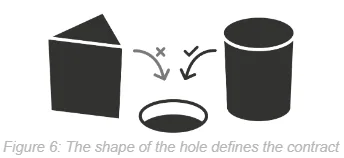
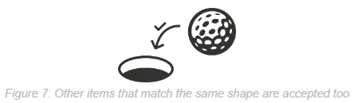

Deep-dive into the world of TypeScript, a popular superset of the JavaScript language that enhances the development experience with static typing. This definitive guide covers every aspect of TypeScript in an approachable, concise, and easy-to-understand style, and remains the ultimate resource for mastering TypeScript for all readers from newcomers to experienced developers.
With a comprehensive coverage of TypeScript's features, you'll gain in-depth knowledge of concepts like structural typing, optionality and union types, computed and recursive types, and much more. Each chapter is packed with practical, real-world examples and insider tips, ensuring you understand the most important features and learn how to avoid common pitfalls.
Whether you're building small projects or large-scale applications, this book equips you with the skills and confidence to write cleaner, scalable, more maintainable code. Don't miss this opportunity to elevate your TypeScript proficiency and stay at the forefront of modern development.
- 1Chapter 1: Introduction
-
Contents
- History
- The Problem
- Scalable Velocity
Chapter Sample
To truly understand TypeScript, it is important to understand some of the background of the language. We want to get onto the fun stuff with types, but this background is necessary, so I'll keep it short and to the point. Because when looking into TypeScript, you'll undoubtedly come across references to both JavaScript and ECMAScript and its versions - so how do all these fit together? So let's rewind the clock to get a quick overview.
The first version of JavaScript was released in 1995, and it quickly gained popularity among web developers. In 1996, Microsoft introduced their own version of JavaScript called JScript. And so in 1997, JavaScript was submitted to the European Computer Manufacturers Association (ECMA) in an effort to standardize. This resulting standard was called ECMAScript, and was released in 1999.
So the important thing to note here is that ECMAScript is a standard, not a language. That means that it defines how features like objects, functions, variables, closures, operators, error handling and etcetera all work and interoperate, but it doesn't define the actual implementation for them. JavaScript then became the first implementation of ECMAScript, defining the syntax and being implemented in runtimes in early browsers.
So ECMAScript v1 (also known as ES1) was released in 1997, and was implemented by concurrent versions of JavaScript. And, like any new specification, features missing from the ECMAScript specification quickly began to be found, and so ECMAScript v2 (ES2) was released shortly after in 1998, and ECMAScript v3 (ES3) in 1999.
- 2Chapter 2: Getting Started with the Developer Experience
-
Contents
- Getting Started
- Environment and IDE
- Debugging TypeScript
Chapter Sample
Although you can build and run TypeScript files directly via the CLI, TypeScript is honestly better used as part of a larger toolchain - leveraging best-of-breed packages from the JavaScript ecosystem to build large scalable websites, back ends, or native apps. Most books will suggest you clone a custom repo created by the author, pre-set for these configurations; but to be frank, that's not how I'd expect you to use TypeScript in industry. Instead, let's now set up TypeScript as part of a toolchain in the best possible way that will be easy to keep up to date.
Sounds good? But with the JavaScript ecosystem moving so quickly, how are we to keep continually up-to-date on all the 'best practice' configurations and NPM packages for our particular use cases?
Thankfully, the ecosystem has matured to a state where this can be done for you by a couple of useful build and management tools - you no longer need retain a full-time job learning about build caching, module bundle splitting, and the like - these can take care of these tasks for you.
The first of these is NX. Let's try it out now.
- 3Chapter 3: TypeScript Basics
-
Contents
- Structural Typing
- Optionality
- Array and Object Destructuring
- Spread, and Rest
- Async
- Generators
- Inferred Types
- Type Widening and Narrowing
- Auto-Narrowing
- Assertions
- Parameterised Values
- Signatures
Chapter Sample
Dynamic languages such as JavaScript use a concept called 'structural typing'. This is more commonly called 'duck typing'. Here's the usual obtuse and confusing picture people will often point you towards when you ask 'why is it called duck typing?':
Not very helpful, I agree. But the preceding image actually looks like a duck and a rabbit (depending on what you're looking for) - so the point here is that it's somewhat both things at the same time.
What the duck-or-rabbit analogy, or 'duck typing' nickname, is getting at is that the type or the class of an object is less important than the methods it defines.
I find an easier way to visualize it is like this:

In the preceding image, whatever is round can fit into the hole. It doesn't matter if it's a ball of string, a cylindrical block, or a golf ball - if it fits the 'contract' delineated by the round hole, it can successfully fit in the round hole:

So that's the way you can think of structural types: structural types define a minimum shape (or structure) of a value. And it doesn't matter what the value is, what it inherits from, or anything else really - if it fits the required minimum contract, it's accepted. And while this may seem overly simplistic, in practice it turns out to be much more powerful, and scalable, than alternative approaches.
This power can take some getting used to, if you come from an object-oriented programming background, and are more familiar with using inheritance and polymorphism. So let's illustrate the power of this with a different example, this time with code. Take the following types:
- 4Chapter 4: Classes
-
Contents
- Constructors
- Fields
- Getters and Setters
- Methods
- Inheritance
- Access Modifiers
- Common Gotchas
Chapter Sample
In this chapter, we will explore how to add TypeScript type-safety to the central building block of object-oriented programming in JavaScript, - namely classes.
We'll begin by learning how to create classes in JavaScript and TypeScript, with type-safe constructors, access modifiers, fields, getters/setters, methods; and we'll explore type-safe inheritance and interface implementation, and instance and static modifiers.
But, while classes offer powerful abstractions for structuring code, it's essential to understand their limitations. And so the remainder of this chapter will discuss the important difference between classes and types in TypeScript and how using classes as types may lead to unexpected behavior. Additionally, we'll explore the concept of scope bleed, a common issue associated with classes, and review how these objects fit (or not) in a truly structurally typed context.
By the end of this chapter, you'll have a solid understanding of classes in TypeScript and how to use them wisely to create robust and scalable applications. Embracing classes alongside functional programming techniques understandingly will empower you to make well-informed decisions about how best to write code that is performant as well as maintainable and easily testable.
So let's dive in and explore the world of classes in TypeScript!
To create a class in ECMAScript or JavaScript, you simply use the class keyword, and then also give it a constructor:
class MyClass { constructor() { // ... } } - 5Chapter 5: Computed Types
-
Contents
- Type Aliases
- Union Types
- Intersection Types
- Generics
- Type Parameters
- Constraints
- Conditionals
- Inference
- Distributive and Non-Distributive Types
- Recursive Types
- Mapped Types
- Template Literals
Chapter Sample
All the shapes we've discussed so far - booleans, strings, interfaces, the in-memory structural contract computed from a class, dates, - all of these are types. As discussed, a 'type' is what we call the minimum contract or shape of a value. And in TypeScript, because of the runtime-typed approach of ECMAScript & JavaScript, we have some additional features to types that make them even more powerful than most other statically-typed languages. We'll explore these in this section on computed types. These computed types are made possible by a powerful feature called type aliases. We create type aliases using the type keyword, like this:interface Person { name: string address: { street: string postcode: string } } // You can assign a type name to an in-built type... type Email = string; type URL = string; // ...assign a type name to another type... type Friend = Person; // ...and even reuse a piece of another type... type Address = Person['address']; ❯ type Address = { street: string; postcode: string; } - 6Chapter 6: Advanced Usage
-
Contents
- Expect and IsEqual
- Compute
- JsonOf
- Flatten
- UrlParameters
- UrlParameters with Optional Params
- Further Reading
Chapter Sample
By this chapter, you will have covered now all the types needed to build truly amazing software. In this chapter, we will use the types you've learned and combine them to solve advanced use-cases, as a form of master-class in TypeScript. For each type I will present, we will review the needs of the type, consider what types we have in our toolbelt that can address these needs, and then combine and build our advanced types step-by-step from the ground up together, so you can see how they're built, and how to make the choices necessary when practicing TypeScript at an advanced proficiency.
We will start with the simpler of these advanced type challenges, and use these to create types that in turn can be used to validate stages in the latter advanced types. And, in finishing, I'll also list some places for further exploration of advanced types that can help you continue your learning journey and connect you to communities that can help you as you progress.
Expect and IsEqual
To create this type, we will use:
- Generics
- Union types
- Pattern matching
- Deferred types
If you've written runtime tests before, you'll be familiar with assertion libraries. MochaJS uses Chai, others such as Jest and Playwright use built-in assertion libraries. These provide the equals function you can use to assert that a value matches your expectations. So, as we'll be building the types in this section from ground-up, let's start by making our own compile-time assertion library, to make it faster to test our types!
What we want is a type we can use like this:
type OurType<U> = { // Fancy TypeScript here to (eg.) convert a union into an array } type IntendedResult = [1, 2, 3]; type Result = IsEqual<OurType<1 | 2 | 3>, IntendedResult> ✅ type Result = IsEqual<number, IntendedResult> ❌Unfortunately, the most straightforward conditional here will not work:
type IsEqual<A, B extends A> = A; // It works! type Result = IsEqual<1, 1>; ✅ // It works! type Result = IsEqual<1 | 2 | 3, "Invalid value">; ❌ // It doesn't work 😢 type Result = IsEqual<1 | 2 | 3, 1>; ✅The problem is that in that last type, we want IsEqual to assert that the first and second arguments are equal types, not just that B is compatible with A. To solve this, break it into two parts - equality, and then assertion.
The equality part is tricky. We can't use a simple conditional like the below because that'll do the same thing - only compare compatibility:
type IsEqual<A, B> = A extends B ? true : false; type Result = IsEqual<1 | 2 | 3, 1>; ❯ type Result = true; 😢We're going to need to go a bit deeper here. To solve this, we're going to use a feature of how conditional operators are implemented internally in TypeScript (this is the Advanced Usage chapter, alright?): Conditional types allow you to compare extends against generic functions and types; but to allow this they would need to be able to compare the type parameters of the generics too, and these generic parameters are unknown so cannot be compared. Instead, conditional operators internally defer the match and require the generic parameters and related types of both branches match each other directly. And this direct match is what we want to leverage for our IsEqual type. The result is this:
- 7Chapter 7: Performance
-
Contents
- Recommendations
- Gotchas
- Partitioning
- Caching
- Type Performance Tracing
- Debugging Type Performance
Chapter Sample
We have mastered the language, now we must master the tool. As helpful as TypeScript is, it also represents a step between writing your code and running it in production. Large or complex codebases with numerous dependencies and intricate control flow can take some time to analyze, and make this step slow.
Delays between writing code and running it are worth reducing. Aside from having small cost implications of dev time and CI/CD running expenses, there is a larger cost that is often overlooked - the human issue.
As humans, we love the creative process. Psychologically our desire to be creative, productive individuals means we bias towards the things we find most success in, and err away from activity we experience friction from. Unfortunately this means that, if a build process is slow, we subconsciously avoid doing it. But this is a problem, because quality only occurs from feedback.
This section is therefore dedicated to how to optimize the performance of your TypeScript configuration. optimization of inline types. We will cover how to utilize caching to store and reuse previously computed types; ways to increase caching and reduce computationally expensive inferred types and intersection types; and code partitioning strategies to permit incremental build. Lastly you will discover how to debug and isolate compilation performance issues in CPU and memory using some built-in and community tools for TypeScript.
Reducing Inline Types
The first step in reducing any complex computation (such as, but not limited to, static type analysis), is to not do it. Caching allows us to store and reuse previously computed types, and therefore is our first point of call in improving TypeScript performance.
Take the following code for example:
- 8Chapter 8: Build
-
Contents
- Compiler Options
- Recommended tsconfig.json Settings
- Project Structure and Build Output
- Linting
- JSX/TSX
- Module Types Explained
- Exports and Imports
Chapter Sample
In this chapter, we will cover the remaining aspects of the build process. TypeScript project configuration is essential to this process, and the heart of this configuration lies in the tsconfig.json file, located in the root of your project folder. We'll begin with an overview of the main options available in this file. Understanding these options is crucial to successfully harness the full potential of the TypeScript compiler.
We will then cover what I would recommend you use as a sensible default for your tsconfig.json settings. Instead of overwhelming you with an exhaustive list of every option available, I'll highlight just the most important ones that will enhance your projects' code quality, maintainability, and compatibility.
After mastering the TypeScript compiler options, we explore additional tooling that can also help prevent errors available via linting. We will explore ESLint and its TypeScript ESLint supplement, and again review what are a good go-to set of rules to leverage among the many available. By using the tsconfig and eslint configurations in this chapter, you will have a robust tooling setup to catch the majority of common programming mistakes and improve code quality.
We will also look at another aspect of TypeScript compilation, which is support for the JSX format. You will see how JSX is just a syntactic sugar on top of normal JavaScript function calls, and therefore how the type-safety techniques you have learnt in this book can be applied to JSX code also.
Finally, we will explore an essential aspect of the build and deployment process, - modules. Understanding the different module formats, and how TypeScript resolves modules, is crucial for making informed choices and managing code organization, dependencies, and interoperability when performing post-compilation steps like bundling and chunking. With this knowledge, you'll be able to structure your projects efficiently and take full advantage of TypeScript's module system.
Recommended tsconfig.json Settings
Rather than go through all the settings available, which are easy to find on the TypeScript official website, we will now go through those compiler options I recommend you use.
The following ideal config we will discuss in detail below, and then we will cover some of the additional linting options you can also add on top of this:
{ "compilerOptions": { // Targeting Modern Browsers: "module": "ESNext", "target": "ESNext", "lib": [ "esnext" ], // Prevent Optional Errors: "noEmitOnError": true, "strict": true, "strictNullChecks": true, "allowUnreachableCode": false, "noImplicitOverride": true, "noImplicitReturns": true, "noUncheckedIndexedAccess": true, "noUnusedLocals": true,